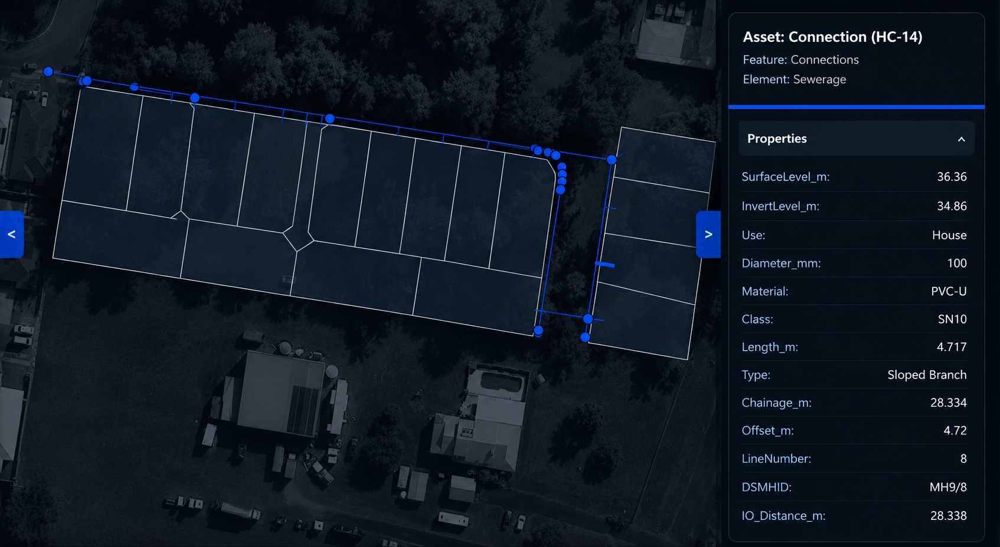

Specialising in ADAC, as constructed and drafting services
Specialist ADAC support built around practical civil project experience
ADACT was created to service the growing need for reliable ADAC providers who understand civil infrastructure, authority requirements and the importance of accurate project records.
About ADACTProject Experience
Over a decade of experience across civil engineering, project management, drafting and asset management spaces.
Understanding Requirements
Always up to date with relevant council and utility guidelines, Australian Standards and ADAC schemas.
Flexible Support
Support for any variation of civil infrastructure projects, from master planned communities to minor works upgardes, we service all regions and asset types.
Hassle-Free
All we need to provide the relevant files is the project information - survey files, design plans and associated relevant project documentation.
Professional ADAC, As Constructed and Drafting support

ADAC File Creation
Professional ADAC file creation for your projects. Our team ensures accuracy, quick turnaround and compliance with industry standards.

As Constructed Plans
Detailed as constructed plans that accurately represent your completed projects. Essential for project completion.

General Drafting
Comprehensive civil engineering drafting services for all civil infrastructure projects. From concept to completion, we've got you covered.
Client testimonials
Ready to get started?
We can prepare a quote within 24 hours.